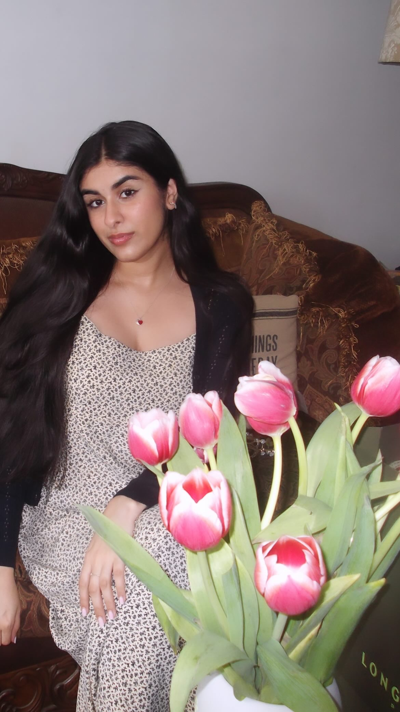

About Me
Hi! I’m Anjali Arora, a fourth-year architecture student at the New York Institute of Technology, Manhattan campus, born and raised in Brooklyn, New York. I’m passionate about designing spaces that are rooted in community, shaped by real human needs, and responsive to the people they serve. One of my favorite projects was a housing development in Bedford, Brooklyn, where I integrated an organic grocery store on the ground floor to create a space that would benefit both residents and the larger neighborhood. Outside of architecture, I love to draw, paint, and explore the city, especially museums, exhibitions, and green spaces. I’m currently a member of AgTech Cohort 8, where I’m exploring how design can support sustainable food systems and expand access to public green space in the urban environments I care deeply about.
My Projects
- Project 1
- Project 2
- Project 3
Skills
- Rhino 3D
- Revit (Beginner)
- Adobe Creative Suite (Photoshop, Illustrator, InDesign)
- Enscape
- Model Making
- Sketching
- Photography
- Languages: English, Hindi, Punjabi